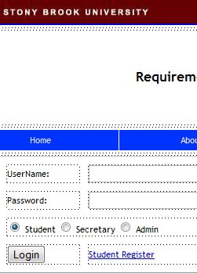

|  |
| Name |
Requirement for Undergraduate Majors System
|
| Course |
CSE308: Software Engineering |
| Instructor |
Professor Scott Stoller |
| Environment |
Java, SQL, JSP, HTML/CSS |
| Description |
I was the manager of three other teammates.
We developed a web-based application that helps students and department secretaries
to check whether a student is on the right track to satisfy his/her major requirements.
This system also gives an administrator the authority to modify requirements of a major.
My primary work includes translating requirements into design diagrams and writing test
cases and database-related code.
|
|